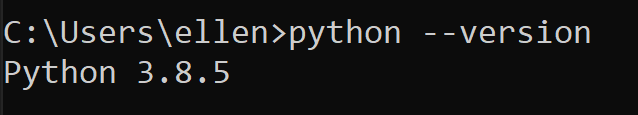

מישהו נתקל בבעיה הבאה?
copytree() got an unexpected keyword argument ‘dirs_exist_ok’
{kind=link}
מופיע בתיעוד
{kind=link}
גרסא פיתון מותקנת אצלי: Python 3.7.6
{kind=link}
לא ראיתי התיחסות באתר גלישת מחסנית…

מישהו נתקל בבעיה הבאה?
copytree() got an unexpected keyword argument ‘dirs_exist_ok’
מופיע בתיעוד
לא ראיתי התיחסות באתר גלישת מחסנית…
New in version 3.8: The dirs_exist_ok parameter.
(הפייתון שלך לא מספיק עדכני בשביל הפיצ’ר הזה  )
)
הו סנאפ חשבתי שזה נכנס ב3.5
בודקת
זה לא פתר את הבעיה, עדין מקבלת את אותה השגיאה.
לכולם זה עובד? מה פספסתי
גרסא:
3.8.5
תבדקי שאת אכן בגירסא העדכנית ולא רץ לך הגירסא הקודמת… זה קורה לפעמים

וידאתי (
רצה על הגרסא החדשה
בדקת גם ב-interpreter? (תלחצי F1)
כלומר שאת משתמשת באחד שהוא 3.8 ומעלה 
לא הבנתי כלכך למה הכוונה לf1 אבל אם אני מריצה print(sys.executable) אני מקבלת את התקיה של הגרסא החדשה
3.8
ריסטתי את המחשב
את עובדת עם VScode?
אם כן, אם תלחצי F1 תפתח לך שורה - תכתבי Python: Select Interpreter ותבחרי באחד מגרסא 3.8 ומעלה.
אם לא, במה את עובדת? 
אה חח פשוט הרצתי בתוך הטרמינל של הvs
וכן עשיתי גם דרך הF1 כמו שאמרת ועדין אותה שגיאה
תצלמי בבקשה אחרי שאת לוחצת f1 ובוחרת select interpreter מה האופציות
ב־print(sys.version) את מקבלת 3.8.5?
ואם את רושמת שורה אחרי זה את ה־copytree עם dirs_exist_ok זה עדיין כועס?
מופיע לך dirs_exist_okay ולא dirs_exist_ok מסיבה מסויימת?
מלךךךךךךךךךךךךךךך !
בדוק שזה יהיה משהו טיפשי חחח
תודה
{kind=link}